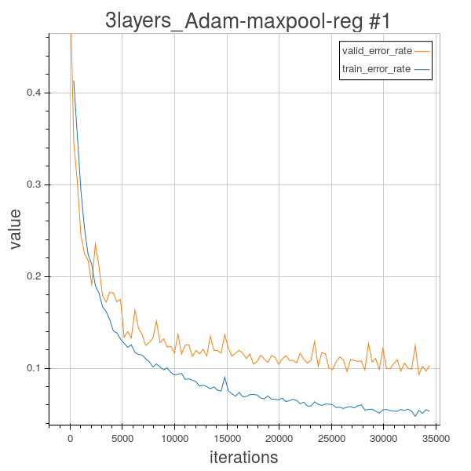
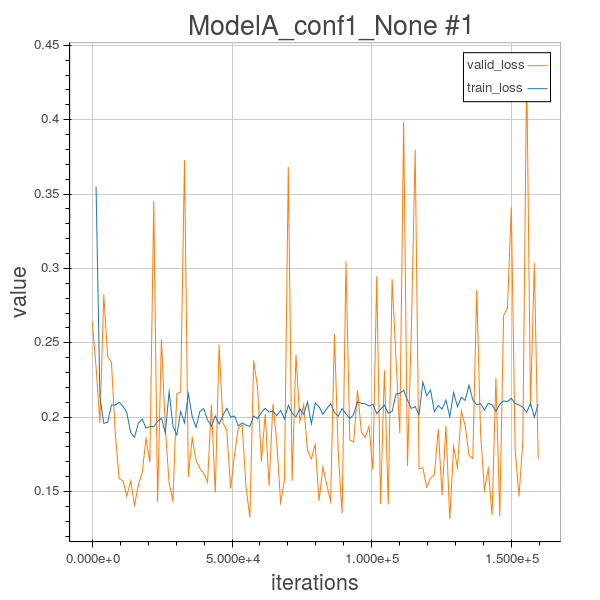
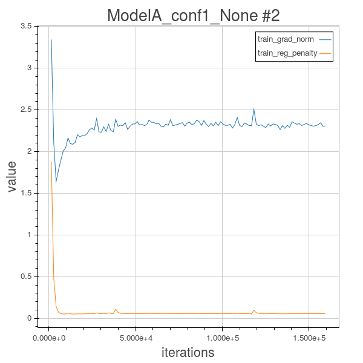

Compte-rendus hebdomadaires
Semaine 15 -- [14 avril - 21 avril]
Plusieurs réseaux ont été lancés au courant de la semaine. Le modèle CNN_4layers fut écarté car le cluster était bien occupé en début de semaine (en plus d'une panne de jeudi soir à vendredi matin). Les modèles CNN_3layers et CNN_5layers furent lancés avec différentes configurations :
De tous ces modèles, celui qui a eu la meilleur performance est le "CNN_3layers" avec maxpool adam et régularisation l1 et l2 à 0.0025 et 0.0025. Les graphiques suivants montrent des informations relatives à l'entrainement.
On remarque que le early-stopping ne semble pas avoir empêcher le réseau de faire de l'over-fitting. Bien que l'erreur de validation ne semble pas augmenter drastiquement et atteint même 9.6% à la 26500e batch, on remarque que la variation de l'erreur de validation augmente à partir de la 22000e batch. J'en conclu que 5 époques sans amélioration de l'erreur de validation est un critère trop lousse pour arrêter le modèle au bon moment. J'ai relancé le modèle avec 3 époques pour le early-stopping et un maximum de 11000 batchs (car c'est à ce moment que l'écart entre l'erreur d'entrainement et de validation dépasse le 2% avec le modèle ci-dessus). Entre-temps, j'ai aussi changé les ReLU pour des Leaky ReLU avec pente de 0.01.
Ce modèle a atteint 88.78% de précision sur l'ensemble de validation (90.92% sur l'ensemble d'entrainement) et arrête au courant de la 31 époque après avoir complété un total de 11000 batchs de 64 examples. Ce modèle est celui qui a été soumis sur le leaderboard.
Les test avec le modèle "CNN_3layers" et momentum ne performent pas aussi bien que avec adam mais s'en approche. Le meilleur modèle avec momentum(et régularisation) accomplit 84.37% sur l'ensemble de validation. Par ailleurs, les modèles avec le average pooling semblent performer systématiquement moins bien que leur contre-partie avec le max pooling. Il est possible que cette situation soit dû à la taille des filtres 5x5 et qu'elle n'a pas de répercutions aussi majeures lorsqu'on utilise des tailles plus petites de filtres.
Les tests basés sur le modèle "CNN_5layers" se sont avérés inconclusif. Le modèle semble incapable de converger vers quelque chose de potable. On dirait que les modèles sont coincés dans un minimum local. Les modèles avec régularisation ont même tendance à rester coincé éventuellement dans leur entrainement (et généralement tôt). Cette situation se traduit généralement par une incapacité à apprendre. Par exemple, voici graphes des taux d'erreurs et des pénalités du modèle "CNN_5layers" avec adam, maxpool et régularisation tel que sur le modèle précédent.
On remarque que le réseau ne semble rien apprendre. Cette situation me porte à croire qu'un pré-entrainement pourrait être un facteur clé dans l'entrainement de modèles larges. Alternativement, il pourrait être intéressant de choisir aléatoirement de multiples configurations de départ, de faire quelques itérations avec chacune d'etre elle et puis choisir celle qui semble la plus favorable à une convergence potable.
Il est aussi à noter que j'ai fini par abandonné l'idée de remettre quelque chose pour le projet de synthèse vocale.
Il est maintenant l'heure d'une petite rétrospective de mon apprentissages des frameworks Lasagne, Blocks, Fuel et Theano. J'ai sous-estimé l'inclinaison de la courbe d'apprentissage de ces frameworks. Il ne fait aucun doute que ceux-ci sont des outils puissants à avoir à disposition. Toutefois, une certaine affinité doit se développer pour être en mesure de les utiliser efficacement ainsi que d'être en mesure de décrypter les erreurs de theano. L'ajout itératif d'éléments dans le réseau de neuronne est une pratique à adopter impérativement pour ne pas laisser passer des erreurs et ainsi prendre un temps disproportionné à débugger.
Finalement, j'aimerais conclure ce blog en remerciant les développeurs des frameworks mentionné ci-dessus ainsi que tous les collègues de classe avec qui j'ai eu la chance de collaborer et/ou d'avoir des échanges constructifs au courant de la session. Merci aussi à Bart qui a supporté mes nombreuses questions sur Blocks tout au long de la session.
Semaine 14 -- [7 avril - 14 avril]
Finalement, on dirait le réseau résiduel n'apprends pas. Après une autre série de test infructueux, je me suis mis à tester des modèles plus petits et à réutiliser le bokeh serveur dans le but de suivre la progression de l'entrainement et de détecter plus rapide lorsque le réseau n'apprends pas.
Après maintes relectures, j'ai découvert une erreur dans le code original du residual net de Asojov. Suite à ça, je suis retourné sur le github original pour finalement m'apercevoir que l'erreur fut corrigée une semaine plus tôt et même qu'une implémentation plus récente, tirée de l'article Identity Mapping in Deep Residual Networks, fut rajoutée. Cet article, des mêmes auteurs que les gagnants du concours ILSVRC 2015, introduit et expérimente avec des variantes de block résiduel. J'ai redémarré des calculs sur un très petit réseau résiduel sans aucune régularisation et sans aucune fonction de pas particulière.
Le résultat fut peu convaincant. Le modèle résiduel ne semblent pas très stable dans sa convergence et j'ai de la difficulté à comprendre les résultats. Le modèle consiste en 3 blocks résiduels qui ont respectivement 32, 64 et 128 filtres. L'entrée est de taille (64,64). L'erreur utilisée est l'erreur quadratique moyenne.
Il est étonnant de voir à quel point les graphes du taux d'erreur et de la fonction de coût semblent avoir une forme similaire. Il est aussi surprenant de voir que l'erreur d'entrainement cesse de s'améliorer très tôt. Pour tenter de contourner le problème, j'ai rajouté de la régularisation l2 de façon uniforme sur tous les poids et biais avec un coefficient de 25e-6. La régularisation L1 est uniforme sur les biais avec un coefficient de 25e-6 et appliquée avec un poid croissant sur tous les layers (le premier layer -> aucune régularisation, ..., celui du milieu -> 125e-7, ..., le dernier -> 25e-6).
 Le modèle semble stagner à 30% d'erreur sur l'ensemble d'entrainement. En plus, la fonction de perte et le taux d'erreur de la validation ne semblent pas beaucoup corréler avec celles de l'entrainement. Initialement, je me suis dit que c'est peut-être la régularisation, même si elle est d'une magnitude plus petite que le coût, qui entraine une telle instabilité. Pourtant, la version sans régularisation entrainée par la suite avait des courbes aux allures similaires mais le tout approximativement 5% plus élevé sur l'entrainement ainsi que la validation.
Il est possible que le modèle manque de capacité, que l'entrée de taille 64x64 implique une trop grande perte d'information pour être capable de distinguer correctement. J'ai donc relancer un modèle pareil à l'exception d'un entrée de taille 128x128. Ce modèle s'avéra avoir un comportement encore plus ératique et éprouva plus de difficulté à converger (meilleur score de 35%). Ce comportement est très curieux, surtout que le modèle ne m'apparait pas avoir une quantité déraisonnable de paramètres. Une raison possible derrière ce comportement pourrait être l'introduction de bruit par les étapes de batch normalisations. Ce bruit pourrait être considérable étant donné que les batchs contiennent un nombre relativement petit d'exemple (32 dans ce cas-ci).
Des modèles plus larges furent aussi essayés mais ne furent pas aucunement concluant non plus. Ne souhaitant pas miser tous mes oeufs dans le même panier, j'ai recommencé à entrainer des CNNs inspirés de LeNet sur la tâche.
Les CNNs utilisés sont des alternances de couches de convolution avec filtre de taille 5x5 (suivi d'une activation non-linéaire) et de couches de pooling de taille 2x2. Par la suite, un MLP est placé à la fin du réseau. Trois modèles ont été définis en respect à cette architecture :
La fonction d'activation utilisée est ReLU est utilisée pour toute les couches sauf celle de sortie qui utilise softmax. Tous possèdent une borne maximale de 100 époques et ont du early-stopping après 5 époques sans améliorer leur taux d'erreur sur l'ensemble de validation. Les résultats devraient arriver en fin de semaine.
Semaine 12 et 13 -- [24 mars, 6 avril]
Les réseaux précédemments lancés ne se sont pas rendus très loin. Le early stopping avec 10 époques les a tous arrêté entre 12 et 20 époques et ceux-ci ne semblent rien avoir apris de significatif.
Alors, j'ai relancer 6 réseaux résiduels qui tournent depuis maintenant presque une semaine. Ils ont entre 60h et 90h de calculs effectifs. Les 4 premiers réseaux ont une fonction de pas différentes (momentum, rmsprop, adam et step-clipping). Les deux autres sont des réseaux avec momentum et rmsprop auquel j'ai rajouté de la régularisation l1 et l2. La régularisation l1 est mis sur toutes les couches avec un poid de 0.001 et la l2 est appliquée sur le dernier tiers des couches avec poid de 1*e-4. Tous les autres paramètres sont les mêmes à l'exception du taux d'apprentissage qui est maintenant de 0.05.
J'ai aussi continuer le projet de synthèse vocale. Les streams sont prêts. Tel qu'expliqué précédemment, un prétraitement est appliqué sur l'entrée dans le but de mettre en exergue certaines caractéristiques du signal. Voici à quoi ressemble la manipulation des streams avec Fuel.
from fuel.transformers.sequences import Window
from fuel.transformers import Mapping, Batch, FilterSources, Merge, ForceFloatX
from fuel.schemes import ConstantScheme
from fuel.datasets.youtube_audio import YouTubeAudio
from your_feature_pretreatement import feature_transform
data = YouTubeAudio('XqaJ2Ol5cC4')
train_stream = data.get_example_stream() # A very long 1-d vector of frequences
train_stream = ForceFloatX(train_stream)
window_stream = Window(0,source_window, target_window, overlapping=False, data_stream=train_stream)
source_stream = FilterSources(window_stream, sources=('features',))
feats_stream = Mapping(source_stream, feature_transform)
targets_stream = FilterSources(window_stream, sources=('targets',))
targets_stream = Flatten(targets_stream)
stream = Merge((feats_stream,targets_stream), sources = ('features','targets'))
it_scheme = ConstantScheme(batch_size,num_examples)
batched_stream = Batch(stream, it_scheme, strictness=1)
return batched_stream
Semaine 11 -- [18 mars, 23 mars]
Après plus de 100 heures de calcul sur les réseaux, je me suis rendu compte que ceux-ci allait atteindre le temps limite (walltime : 120h) avant de compléter leurs calculs. J'ai tenté d'envoyé un SIGTERM sans envoyer le signal SIGKILL pour signifier à blocks de sauvegarder le MainLoop après la prochaine époque. La commande "msjobctl -c id" envoie les deux signals avec un petit délai, ce qui ne correspond pas au comportement voulu. J'ai contacté le support technique du serveur qui m'a indiqué que la commande que je cherchais était "qsig id". Toutefois, les réseaux n'ont pas appliqués le checkpoint une fois cette commande reçu et on presque instantanément arrêté. :C
Je vais relancer les calculs avec les extensions blocks "TrackTheBest" et "FinishIfNoImprovementAfter" (early-stopping), de même qu'avec un checkpoint à chaque 5 époques. Aussi, je vais réduire la taille du modèle à 17 couches résiduelles. Une fois que j'aurai les résultats pour le modèle à 17 couches, j'envisagerai de retourner à 23 couches si il me reste du temps.
Semaine 10 -- [11 mars, 17 mars]
Les premiers réseaux résiduels ont été lancés au cours de la semaine. J'ai rajouté une couche de maxpooling car la mémoire est un facteur limitant pour la taille du réseau et j'aimerais mise sur la profondeur plus que la largeur du réseaux.
Les résultats seront affichés sur ce blog lorsque obtenu.
Semaine 9 -- [4 mars, 10 mars]
Bon, je suis maintenant prêt à lancer mes calculs. Après avoir essayé pour une durée considérable de temps, j'ai mis sur pause l'idée de faire du live-plotting avec Bokeh à travers le serveur de calcul. Je devrais être en mesure de faire des graphiques à partir des résultats une fois ceux-ci sauvegardés. J'ai déjà entamé un script qui récupère les données du MainLoop dans le fichier *.tar* et qui charge les résultats avec la librairie *pandas*. Je devrais être en mesure d'utiliser matplotlib.pyplot pour faire des jolis graphes avec plusieurs courbes.
Aussi, j'ai un bogue au niveau de l'initialisation de mon LSTM.
Ci-dessous se trouve une bref introduction sur comment importer et utiliser un modèle Lasagne avec Blocks. Celui-ci est écrit en anglais pour pouvoir potentiellement rejoindre plus de gens.
Notes on how to use Lasagne neural network with Blocks!
The duo Blocks and Fuel make a great pair for training a neural net. Blocks features many useful extensions and is a powerful framework. On the downside, examples are sparse online and you often have to dig in the source code of the framework to be able to debug. The Lasagne framework, although it gave me the impression of being a bit less flexible than Blocks, benefits from its straightfoward neural net building paradigm. Few modifications are needed to your Blocks script to be able to use is with a Lasagne net, but they might be non-trivial to find for someone who isn't familiar with theses frameworks (such as me!).You can't use the Computation Graph like you usually would with a Blocks-builded net. Once you retrieve the theano variable representing the output with the command *lasagne.layers.get_output(output_layer, input_var)*, you can use either blocks or lasagne to define the loss function. If you were to build a Computation Graph with that loss function, all the network parameters (weights, biases, etc.) would end in the shared_variables attribute of the CG instance instead of *cg.parameters*. The *cg.parameters* variable will be an empty list and Blocks will crash at the beggining of the main loop.
You can bypass this problem by using the following :
test_prediction = lasagne.utils.as_theano_expression(lasagne.layers.get_output(output_layer,deterministic=True)) #For batchnorm
[...]
params = map(lasagne.utils.as_theano_expression,lasagne.layers.get_all_params(output_layer, trainable=True))
algorithm = GradientDescent( cost=loss, gradients={var:theano.tensor.grad(loss,var) for var in params}, step_rule=step_rule)
[...]
It is to note that this doesn't work using a step_rule other than Scale from Blocks. I believe further modification in the instanciation of GradientDescent instance is needed to make it work.
Semaine 8 -- [26 février, 3 mars]
Après maintes essais infructueux, j'ai mis sur pause mon implémentation de residual net avec Blocks. Entre temps, j'ai trouvé une implémentation du residual network avec Lasagne. Je suis en train d'essayer d'importer le ComputationGraph du modèle pour pouvoir l'utiliser avec le MainLoop de Blocks et les data streams de Fuel. J'ai aussi fait du gros refractorage de code.
J'ai par ailleurs entamé quelques exemples de RNN/LSTM/GRU avec Blocks.
Semaine 7 -- [18 février, 25 février]
Bon, j'ai quelques problèmes persistants avec mon implémentation du ResNet avec Blocks. Je commence à faire du surplace et c'est fâcheux. Je vais essayer de compenser le peu d'avancement de cette semaine en y mettant plus de temps la semaine prochaine.
Je commence à avoir une idée un peu plus claire d'une expérience intéressante qu'il serait possible de faire pour le projet de synthèse vocale. L'idée est la suivante : précalculer des features et apprendre avec un stack de LSTM à prédire directement les fréquences étant donné une séquence de ces features en entrée. Il serait possible par la suite de comparer différents ensembles de features et voir lesquelles, une fois mise en entrée du réseau, permettent le mieux de synthétiser les transitions propres au chant et d'apprendre à générer quelque chose de similaire. Il est raisonnable d'espérer que des features bien choisies peuvent agir comme catalyseur de l'apprentissage.
Tel que mentionné précédemment la librairie *python-speech-features* nous permet de calculé les coefficients ceptraux ajusté à la fréquence de Mel (MFCC). Mais qu'est-ce que sont les MFCC d'un signal au juste?
Sur le signal, on applique une fenêtre glissante (typiquement une fenêtre de Hamming). Sur chaqu'une d'entre elle, on applique des transformées de Fourier pour obtenir une représentation de l'extrait du signal dans le domaine des fréquences. Sur les fonctions résultantes, on applique des filtres triangulaires partiellement superposés dont l'espacement (et donc la superposition) est déterminée par l'échelle de Mel, une échelle psychoacoustique calculée expérimentalement, pour optenir le spectre sur la fréquence de Mel. On applique une échelle logarithmique puis on fait une transformation cosinus discrète pour obtenir le ceptrum, c'est-à-dire le "spectre du spectre du signal".
Présenté de cette façon, on dirait un peu de la magie. Puisqu'une image vaut mille mots, voici une image où le graphique en haut représente le son original et le graphique en bas les MFCC extraits.
Une autre approche innovante consisterait à construire un "gating system" qui prends l'entrée et qui applique une fonction pour déterminer les coefficients du masque dropout à appliquer. Il serait donc possible d'avoir certaine partie du réseau qui ne s'active que lorsque certaine caractéristique sont présente dans l'entrée. Je tiens à donner le crédit de cette idée à Emmanuel qui me l'a introduite. Cette option m'apparaît toutefois plus complexe; je doute fortement que j'arrive à coder un tel système dans le temps qui m'est alloué.
Blocks me semble un outils puissant mais je commence à envisager d'utiliser le framework Lasagne (pour le réseau récurrent peut-être). Après un peu d'exploration, celui-ci me semble un peu plus directe et semble contenir plus d'exemple sur le net.
Semaine 6 -- [12 février, 18 février]
Le resnet est entamé avec Blocks. Ça compile pas encore mais ça arrive.
Au menu des lectures intéressantes de la semaine, on retrouve le tutorial de Florian sur comment utiliser le cluster de Calcul Québec. Ainsi qu'un article qui fait états d'expérimentations extensives avec des residual nets en Torch.
Semaine 5 -- [5 février, 11 février]
Pour l'instant voici le plan pour les deux projets :Pour Dogs and Cats, je vais essayer de m'inspirer de l'article Deep Residual Learning for Image Recognition pour classifier ces images. Ce réseau très profond et qui utilise très peu de pooling a gagné la première place de la compétition de classification ILSVRC 2015.
Les réseaux résiduels sont composés d'une séquence de blocs résiduels. Chaque bloc est composé de deux couches de convolution suivi de l'ajout de l'identité de l'entrée à l'aide d'une "skip connection" (voir figure ci-dessous). Il est à noter que de la normalisation par batch est généralement appliquée directement après les convolutions.

Les réseaux résultants de séquence de ces blocs sont très profonds; le réseau utilisé qui s'est classé dans la compétition d'ImageNet possédait une profondeur de 152 couches! La première étape sera de coder un objet implémentant l'interface *blocks.bricks.Feedfoward* et correspondant à un *residual layer*, c'est-à-dire à deux convolutions. La deuxième étape sera d'arranger une procédure qui génère une séquence de ces bricks selon des paramètres de profondeurs, de tailles, etc. Les séquences de bricks générées auront une certaine augmentation de filtre ainsi qu'une diminution progressive de la taille de l'image.
Éventuellement, je devrais considérer augmenter la quantité de données en appliquant diverses transformations (rotation, translation, ajout de bruit) sur l'ensemble de données initial. Augmenter les données de cette façon permet devrait permettre de mieux généraliser et de rendre les convolutions un peu plus invariante à ces transformations.
Pour ce qui est du projet de synthèse vocale, je ne suis pas encore décidé sur la forme que prendra mon modèle. Deux articles très intéressants qui s'attaquent à ce problème sont en lien plus bas.
Liens intéressants :Semaine 4 -- [29 janvier, 4 février ]
J'ai réussi à faire fonctionner les calculs sur la carte graphique avec mon desktop. Je me suis aussi débarasser du *BilinearResize* que j'ai précédemment codé car ce dernier était plutôt lent. J'utilise maintenant la fonction *resize* de la librairie Scikit-image. J'ai aussi réussi à faire fonctionner un réseau à convolution LeNet-like sur mon portable, par contre j'ai un ImportError incompréhensible interne à theano (qui semblent référée à BLAS) lorsque j'essaye de faire rouler le même script sur mon desktop.
J'ai aussi trouver la librairie *python-speech-feature* qui calcul les *coefficiants ceptraux ajustés à la fréquence de Mel* (MFCC). J'ai fait une classe *fuel.transformers* qui appelle la librairie avec tous les examples envoyés dans le stream. J'ai creusé un peu plus sur les LSTM, les GRU et les nombreuses autres variantes (Neural Turing Machine!? ).
La morale de cette semaine :
Semaine 3 -- [ 22 janvier, 28 janvier ]
Les sujets de projets sont sortis. Le premier sujet est la classification d'image de chien et de chats en utilisant exclusivement le dataset de la compétition Kaggle Dogs and Cats. Le deuxième sujet implique de faire de la synthèse vocale. En l'occurence,
En m'inspirant de la structure des transformeurs dans Blocks, j'ai fait un transformeur visant à redimensionner une image par interpolation bilinéaire dans le but de pouvoir traiter une image de taille fixe. Ça semble marcher mais c'est plutôt lent. Je ne suis pas encore en mesure de faire des calculs sur carte graphique.
Liens pertinents de la semaine :
Semaine 2 -- [ 15 janvier, 21 janvier ]
J'ai abandonné Pylearn2 et je me suis mis à jouer avec Blocks et Fuel. J'ai fait des MLP à 3 couches cachées (et softmax sur l'output) et écrit une petite procédure pour tester sur MNIST différentes configurations de fonctions d'activation. La procédure teste toutes les 3-permutations de {reLU, sigmoid} pour la même configuration de batch, learning rate et dimensions.
Mes objectifs pour la prochaine semaine et demie est de réussir à importer des données avec Fuel et ainsi que commencer à me familiariser avec des architectures plus complexe (CNN et/o u RNN).
Si j'ai le temps, il faudrait aussi que je trouve une manière de faire du live ploting (e.g. les courbes d'apprentissages). Blokeh semble être designé pour ça.
J'ai aussi lu l'article A Survey On Transfer Learning et suis présentemment en train de lire Maxout Networks.
Liens pertinents :Semaine 1 -- [ 8 janvier, 14 janvier ]
La page du blog est maintenant faite! J'ai commencé à me familiariser avec Pylearn2 en suivant les tutorials suivants :
Je suis en train de jouer un peu avec la librairie. Ça calcul vraiment rapidement, surtout si je compare avec le code en python/numpy fait dans le dernier devoir du cours IFT3395. Je fais mes tests sur MNIST en me basant initialement sur le code dans les tutorials.
J'ai par la suite découvert d'autres librairies basé sur Theano pour faire des réseaux de neuronnes en python(Lasagne et le duo Blocks et Fuel. Je ne les ai pas encore testés mais à en juger par le dépôt github, ils sont maintenus plus à jour que PyLearn2. Aussi, je pense qu'il n'y a pas de fichier YAML à configurer pour faire des test (ce qui me semble un gain vs. PyLearn2). Je pense éventuellement tester Blocks et Fuel.